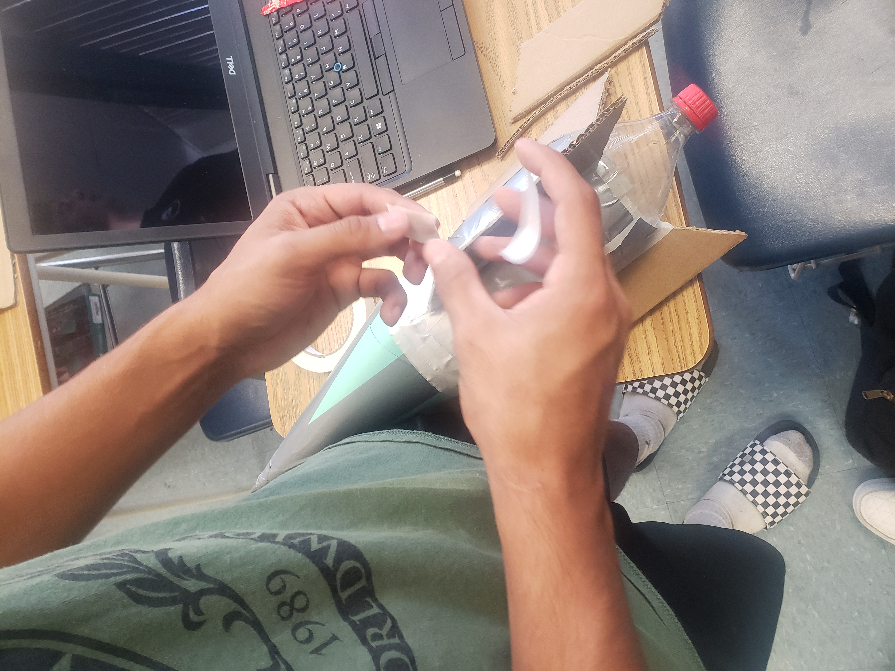

This week we learned how to use tinkercad. We discussed what a Rude-Goldberg machine is and how our 1st project will be about one. We also made a CAD of a household item for our challenge. I made a ricecooker.
*9/5/2022 - 9/9/2022*
This week we worked on our CADs for the Rude-Goldberg machine. We came up with two different ideas, involving a car(wheel and axle), a inclined plane, and a rod.
*9/12/2022 - 9/16/2022*
This week we worked on building our Rude-Goldberg machines out of cardboard based on our CADs. We first drew the outlines on a piece of cardboard, and then cut them out with a boxcutter. On Friday, we made paper boats and put weights on them to see how long they floated in water.
*9/19/2022 - 9/23/2022*
This week we finished making our Rude-Goldberg machines out of cardboard. It included a baseball, an incline plane, a car with a ram, and a hammer-like lever with a needle on the end. At first we were originally just going to have a pole with a needle fall on the balloon, but decided to put it on a hinge so that we could control the direction it fell at all times. We tested them on friday. At first our machine didn't work because there wasn't enough force from the lever's fall to pop the balloon. So, we made the lever stand more upright to minimize the backwards force, and made the ram on the car wider to guarantee it hitting the lever even if it doesn't go straight. Our machine successfully popped the balloon on our second attempt.
*9/26/2022 - 9/30/2022*
This week we began our computer engineering unit. We had a guest speaker who taught us the basics of computer engineering. We also dissected a laptop, finding and labeling the parts such as the CPU, GPU, Heat Sink, Fan, etcetera. We also had to color in a worksheet while labeling various parts.
*10/03/2022 - 10/07/2022*
This week the unit was bioengineering. We made CADs of an animal prosthetic. I decided to make a chicken leg prosthetic. I modeled it based off of images of different bird prosthetics and human leg prosthetics. I decided to add the toes/claws for aesthetic and to increase footing and grip.
*10/10/2022 - 10/14/2022*
This week we started our aerospace engineering unit. We started our sketches and CADs of a bottle rocket that we are going to test. I learned that the bottle rocket is propelled by air pressure caused by a bike pump pumping air into the bottle.
*10/17/2022 - 10/21/2022*

This week we continued our bottle rocket construction. Our design consisted of a cone head for aerodynamics and 3 parallelogram fins because that's what a website said was ideal. However, in testing, our rocket seemed to be too top heavy because it just dipped forward instead of shooting up. It probably could have gone better if it was angled a little higher at the start, but we couldn't change that.


.jpg)
.jpg)